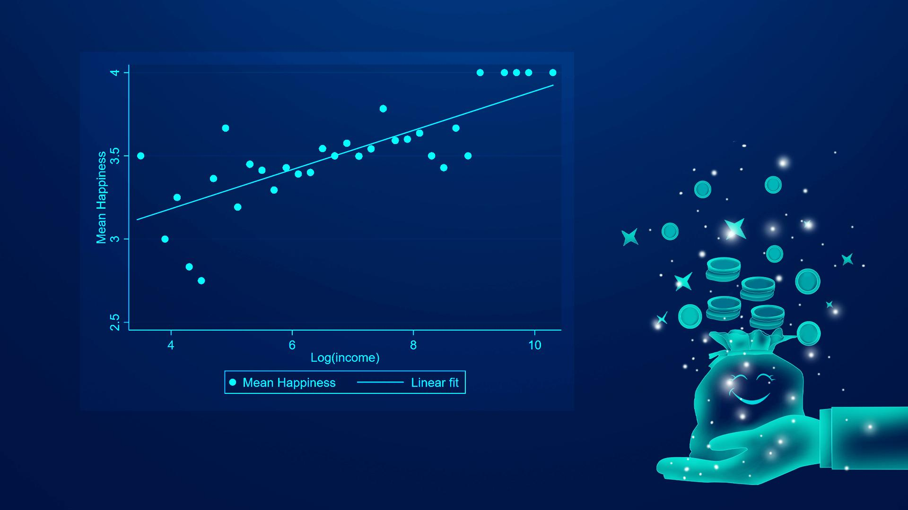

南方科技大学新闻网报道：“南科大叶茂亮合作在PNAS发表收入对幸福感因果影响的研究成果”
报道原文链接：https://newshub.sustech.edu.cn/html/202306/44090.html
报道内容：
近日，南方科技大学商学院应用经济学系副教授叶茂亮以第一作者身份与浙江大学教授张俊森、斯坦福大学教授李宏彬合作撰写的论文“Twins, income, and happiness: Evidence from China”在美国科学院院刊（PNAS）发表。南科大是论文第一单位。该文探究经济学与心理学等社会科学中的一个核心难题，即收入对幸福感是否存在真实影响以及该影响的大小。该文的独特性在于使用双胞胎数据，在估计收入对幸福感影响的文献中是为数不多的同时解决家庭背景以及遗传因素等遗漏变量偏差和测量误差的研究之一，也是首次采用双胞胎兄弟姐妹汇报的收入作为工具变量解决测量误差。

该文估计的收入影响远高于文献的传统估计值：将收入翻倍使得四分制的幸福感平均提高0.26分（相当于0.37个标准差），或使得“常常有快乐情绪”的可能性增加16.3个百分点。收入的影响在男性和中年群体中更为明显。此结论在政策含义上强调了收入保障对维持生活质量和提升个人福利的核心支撑作用，对快速变化的发展和转型社会具有重要启示；在方法论上则提醒研究社会经济因素对幸福感的影响时需要全面考虑各类因素可能造成的估计偏差。
该文发表于PNAS的经济科学部门，其编辑和编委会成员均为国际领军经济学家。此次受理的编辑是相关方法权威专家，给予了该研究“具有原创性突破并阐述清晰到位“的评价("Congratulations on this original research, and on the well written exposition it contains")。
幸福感研究（或泛指subjective well-being studies 即主观福祉研究）跨越经济学、心理学、社会科学等学科领域，在经济学内部则可以归属于行为经济学、人口与劳动经济学、发展经济学、公共经济学，既可以帮助探究个人偏好和效用函数这些经济学最重要的基础概念，也和人类福利这一终极目标紧密关联。在幸福感研究方面，叶茂亮副教授有着较好的科研积累，已主持完成教育部基金项目、撰写多篇相关论文（其中部分已发表于国际知名刊物），并将在相关的理论研究、统计计量方法论及应用等方面继续深入探索，以及进一步加深和国内外相关学者的交流合作。
论文链接：https://doi.org/10.1073/pnas.2221884120
供稿：商学院
通讯员：钟冬妮
主图：丘妍
编辑：朱增光